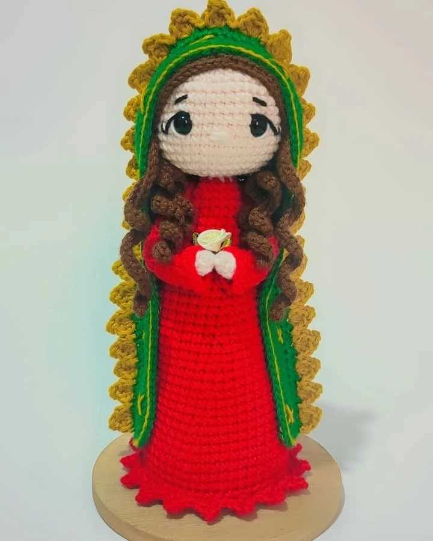

Ramos, amigurumis y regalos personalizados para momentos especiales. Cada pieza creada a mano con dedicación y creatividad.

Lo más querido por nuestras clientas
Toca o haz clic en una imagen para verla en grande.

Duo tierno tejido a mano, ideal para regalar o coleccionar.
S/ 120.00

Rapunzel tejida con Pascal, llena de color y encanto.
S/ 95.00

Figura tejida de la Virgen de Guadalupe con detalles finos.
S/ 80.00

Ramo tematico Pooh con flores tejidas y toque infantil.
S/ 110.00

Figura de hombre personalizada segun estilo y referencia.
S/ 65.00

Cuadro decorativo personalizado con detalle tejido de amor.
S/ 130.00
En Bonny creamos regalos personalizados hechos a mano con dedicación y creatividad. Cada pieza lleva el cariño de quien la hace y la ilusión de quien la recibe.